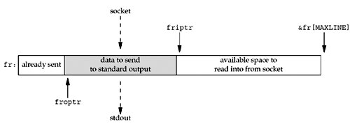
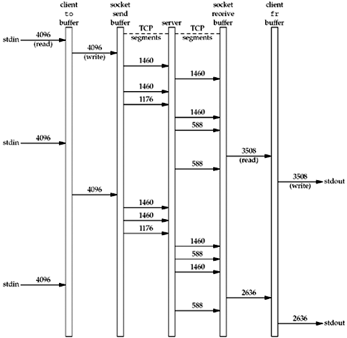
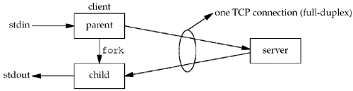

| [ Team LiB ] |
|
16.2 Nonblocking Reads and Writes: str_cli Function (Revisited)We return once again to our str_cli function, which we discussed in Sections 5.5 and 6.4. The latter version, which uses select, still uses blocking I/O. For example, if a line is available on standard input, we read it with read and then send it to the server with writen. But the call to writen can block if the socket send buffer is full. While we are blocked in the call to writen, data could be available for reading from the socket receive buffer. Similarly, if a line of input is available from the socket, we can block in the subsequent call to write, if standard output is slower than the network. Our goal in this section is to develop a version of this function that uses nonblocking I/O. This prevents us from blocking while we could be doing something productive. Unfortunately, the addition of nonblocking I/O complicates the function's buffer management noticeably, so we will present the function in pieces. As we discussed in Chapter 6, using standard I/O with sockets can be difficult, and that is very much the case with nonblocking I/O. So we continue to avoid standard I/O in this example. We maintain two buffers: to contains data going from standard input to the server, and fr contains data arriving from the server going to standard output. Figure 16.1 shows the arrangement of the to buffer and the pointers into the buffer. Figure 16.1. Buffer containing data from standard input going to the socket.
The pointer toiptr points to the next byte into which data can be read from standard input. tooptr points to the next byte that must be written to the socket. There are toiptr minus tooptr bytes to be written to the socket. The number of bytes that can be read from standard input is &to [MAXLINE] minus toiptr. As soon as tooptr reaches toiptr, both pointers are reset to the beginning of the buffer. Figure 16.2 shows the corresponding arrangement of the fr buffer. Figure 16.2. Buffer containing data from the socket going to standard output. Figure 16.3 shows the first part of the function. Figure 16.3 str_cli function, first part: initializes and calls select.nonblock/strclinonb.c
1 #include "unp.h"
2 void
3 str_cli(FILE *fp, int sockfd)
4 {
5 int maxfdp1, val, stdineof;
6 ssize_t n, nwritten;
7 fd_set rset, wset;
8 char to[MAXLINE], fr[MAXLINE];
9 char *toiptr, *tooptr, *friptr, *froptr;
10 val = Fcntl(sockfd, F_GETFL, 0);
11 Fcntl(sockfd, F_SETFL, val | O_NONBLOCK);
12 val = Fcntl(STDIN_FILENO, F_GETFL, 0);
13 Fcntl(STDIN_FILENO, F_SETFL, val | O_NONBLOCK);
14 val = Fcntl(STDOUT_FILENO, F_GETFL, 0);
15 Fcntl(STDOUT_FILENO, F_SETFL, val | O_NONBLOCK);
16 toiptr = tooptr = to; /* initialize buffer pointers */
17 friptr = froptr = fr;
18 stdineof = 0;
19 maxfdp1 = max(max(STDIN_FILENO, STDOUT_FILENO), sockfd) + 1;
20 for ( ; ; ) {
21 FD_ZERO(&rset);
22 FD_ZERO(&wset);
23 if (stdineof == 0 && toiptr < &to[MAXLINE])
24 FD_SET(STDIN_FILENO, &rset); /* read from stdin */
25 if (friptr < &fr[MAXLINE])
26 FD_SET(sockfd, &rset); /* read from socket */
27 if (tooptr != toiptr)
28 FD_SET(sockfd, &wset); /* data to write to socket */
29 if (froptr != friptr)
30 FD_SET(STDOUT_FILENO, &wset); /* data to write to stdout */
31 Select(maxfdp1, &rset, &wset, NULL, NULL);
Set descriptors to nonblocking10–15 All three descriptors are set to nonblocking using fcntl: the socket to and from the server, standard input, and standard output. Initialize buffer pointers16–19 The pointers into the two buffers are initialized and the maximum descriptor plus one is calculated, which will be used as the first argument for select. Main loop: prepare to call select20 As with the previous version of this function, Figure 6.13, the main loop of the function is a call to select followed by individual tests of the various conditions we are interested in. Specify descriptors we are interested in21–30 Both descriptor sets are set to 0 and then up to 2 bits are turned on in each set. If we have not yet read an EOF on standard input, and there is room for at least one byte of data in the to buffer, the bit corresponding to standard input is turned on in the read set. If there is room for at least one byte of data in the fr buffer, the bit corresponding to the socket is turned on in the read set. If there is data to write to the socket in the to buffer, the bit corresponding to the socket is turned on in the write set. Finally, if there is data in the fr buffer to send to standard output, the bit corresponding to standard output is turned on in the write set. Call select31 select is called, waiting for any one of the four possible conditions to be true. We do not specify a timeout for this function. The next part of the function is shown in Figure 16.4. This code contains the first two tests (of four) that are made after select returns. read from standard input32–33 If standard input is readable, we call read. The third argument is the amount of available space in the to buffer. Handle nonblocking error34–35 If an error occurs and it is EWOULDBLOCK, nothing happens. Normally this condition "should not happen," that is, select telling us that the descriptor is readable and read returning EWOULDBLOCK, but we handle it nevertheless. read returns EOF36–40 If read returns 0, we are finished with the standard input. Our flag stdineof is set. If there is no more data in the to buffer to send (tooptr equals toiptr), shutdown sends a FIN to the server. If there is still data in the to buffer to send, the FIN cannot be sent until the buffer is written to the socket.
Figure 16.4 str_cli function, second part: reads from standard input or socket.nonblock/strclinonb.c
32 if (FD_ISSET(STDIN_FILENO, &rset)) {
33 if ( (n = read(STDIN_FILENO, toiptr, &to[MAXLINE] - toiptr)) < 0) {
34 if (errno != EWOULDBLOCK)
35 err_sys("read error on stdin");
36 } else if (n == 0) {
37 fprintf(stderr, "%s: EOF on stdin\n", gf_time());
38 stdineof = 1; /* all done with stdin */
39 if (tooptr == toiptr)
40 Shutdown(sockfd, SHUT_WR); /* send FIN */
41 } else {
42 fprintf(stderr, "%s: read %d bytes from stdin\n", gf_time(),
43 n);
44 toiptr += n; /* # just read */
45 FD_SET(sockfd, &wset); /* try and write to socket below */
46 }
47 }
48 if (FD_ISSET(sockfd, &rset)) {
49 if ( (n = read(sockfd, friptr, &fr[MAXLINE] - friptr)) < 0) {
50 if (errno != EWOULDBLOCK)
51 err_sys("read error on socket");
52 } else if (n == 0) {
53 fprintf(stderr, "%s: EOF on socket\n", gf_time());
54 if (stdineof)
55 return; /* normal termination */
56 else
57 err_quit("str_cli: server terminated prematurely");
58 } else {
59 fprintf(stderr, "%s: read %d bytes from socket\n",
60 gf_time(), n);
61 friptr += n; /* # just read */
62 FD_SET(STDOUT_FILENO, &wset); /* try and write below */
63 }
64 }
read returns data41–45 When read returns data, we increment toiptr accordingly. We also turn on the bit corresponding to the socket in the write set, to cause the test for this bit to be true later in the loop, thus causing a write to be attempted to the socket.
read from socket48–64 These lines of code are similar to the if statement we just described when standard input is readable. If read returns EWOULDBLOCK, nothing happens. If we encounter an EOF from the server, this is okay if we have already encountered an EOF on the standard input, but it is not expected otherwise. If read returns some data, friptr is incremented and the bit for standard output is turned on in the write descriptor set, to try to write the data in the next part of the function. Figure 16.5 shows the final portion of the function. Figure 16.5 str_cli function, third part: writes to standard output or socket.nonblock/strclinonb.c
65 if (FD_ISSET(STDOUT_FILENO, &wset) && ((n = friptr - froptr) > 0)) {
66 if ( (nwritten = write(STDOUT_FILENO, froptr, n)) < 0) {
67 if (errno != EWOULDBLOCK)
68 err_sys("write error to stdout");
69 } else {
70 fprintf(stderr, "%s: wrote %d bytes to stdout\n",
71 gf_time(), nwritten);
72 froptr += nwritten; /* # just written */
73 if (froptr == friptr)
74 froptr = friptr = fr; /* back to beginning of buffer */
75 }
76 }
77 if (FD_ISSET(sockfd, &wset) && ((n = toiptr - tooptr) > 0)) {
78 if ( (nwritten = write(sockfd, tooptr, n)) < 0) {
79 if (errno != EWOULDBLOCK)
80 err_sys("write error to socket");
81 } else {
82 fprintf(stderr, "%s: wrote %d bytes to socket\n",
83 gf_time(), nwritten);
84 tooptr += nwritten; /* # just written */
85 if (tooptr == toiptr) {
86 toiptr = tooptr = to; /* back to beginning of buffer */
87 if (stdineof)
88 Shutdown(sockfd, SHUT_WR); /* send FIN */
89 }
90 }
91 }
92 }
93 }
write to standard output65–68 If standard output is writable and the number of bytes to write is greater than 0, write is called. If EWOULDBLOCK is returned, nothing happens. Notice that this condition is entirely possible because the code at the end of the previous part of this function turns on the bit for standard output in the write set, without knowing whether the write will succeed or not. write OK69–75 If the write is successful, froptr is incremented by the number of bytes written. If the output pointer has caught up with the input pointer, both pointers are reset to point to the beginning of the buffer. write to socket77–91 This section of code is similar to the code we just described for writing to the standard output. The one difference is that when the output pointer catches up with the input pointer, not only are both pointers reset to the beginning of the buffer, but if we encountered an EOF on standard input, the FIN can be sent to the server. We now examine the operation of this function and the overlapping of the nonblocking I/O. Figure 16.6 shows our gf_time function, which is called from our str_cli function. Figure 16.6 gf_time function: returns pointer to time string.lib/gf_time.c
1 #include "unp.h"
2 #include <time.h>
3 char *
4 gf_time(void)
5 {
6 struct timeval tv;
7 static char str[30];
8 char *ptr;
9 if (gettimeofday(&tv, NULL) < 0)
10 err_sys("gettimeofday error");
11 ptr = ctime(&tv.tv_sec);
12 strcpy(str, &ptr[11]);
13 /* Fri Sep 13 00:00:00 1986\n\0 */
14 /* 0123456789012345678901234 5 */
15 snprintf(str + 8, sizeof(str) - 8, ".%06ld", tv.tv_usec);
16 return (str);
17 }
This function returns a string containing the current time, including microseconds, in the following format: 12:34:56.123456 This is intentionally in the same format as the timestamps output by tcpdump. Also notice that all the calls to fprintf in our str_cli function write to standard error, allowing us to separate standard output (the lines echoed by the server) from our diagnostic output. We can then run our client and tcpdump and take this diagnostic output along with the tcpdump output and sort the two outputs together, ordered by the time. This lets us see what happens in our program and correlate it with the corresponding TCP action. For example, we first run tcpdump on our host solaris, capturing only TCP segments to or from port 7 (the echo server), saving the output in the file named tcpd.
solaris % tcpdump -w tcpd tcp and port 7
We then run our TCP client on this host, specifying the server on the host linux.
solaris % tcpcli02 192.168.1.10 < 2000.lines > out 2> diag
Standard input is the file 2000.lines, the same file we used with Figure 6.13. Standard output is sent to the file out, and standard error is sent to the file diag. On completion, we run
solaris % diff 2000.lines out
to verify that the echoed lines are identical to the input lines. Finally, we terminate tcpdump with our interrupt key and then print the tcpdump records, sorting these records with the diagnostic output from the client. Figure 16.7 shows the first part of this result. Figure 16.7 Sorted output from tcpdump and diagnostic output.
solaris % tcpdump -r tcpd -N | sort diag -
10:18:34.486392 solaris.33621 > linux.echo: S 1802738644:1802738644(0)
win 8760 <mss 1460>
10:18:34.488278 linux.echo > solaris.33621: S 3212986316:3212986316(0)
ack 1802738645 win 8760 <mss 1460>
10:18:34.488490 solaris.33621 > linux.echo: . ack 1 win 8760
10:18:34.491482: read 4096 bytes from stdin
10:18:34.518663 solaris.33621 > linux.echo: P 1:1461(1460) ack 1 win 8760
10:18:34.519016: wrote 4096 bytes to socket
10:18:34.528529 linux.echo > solaris.33621: P 1:1461(1460) ack 1461 win 8760
10:18:34.528785 solaris.33621 > linux.echo: . 1461:2921(1460) ack 1461 win 8760
10:18:34.528900 solaris.33621 > linux.echo: P 2921:4097(1176) ack 1461 win 8760
10:18:34.528958 solaris.33621 > linux.echo: . ack 1461 win 8760
10:18:34.536193 linux.echo > solaris.33621: . 1461:2921(1460) ack 4097 win 8760
10:18:34.536697 linux.echo > solaris.33621: P 2921:3509(588) ack 4097 win 8760
10:18:34.544636: read 4096 bytes from stdin
10:18:34.568505: read 3508 bytes from socket
10:18:34.580373 solaris.33621 > linux.echo: . ack 3509 win 8760
10:18:34.582244 linux.echo > solaris.33621: P 3509:4097(588) ack 4097 win 8760
10:18:34.593354: wrote 3508 bytes to stdout
10:18:34.617272 solaris.33621 > linux.echo: P 4097:5557(1460) ack 4097 win 8760
10:18:34.617610 solaris.33621 > linux.echo: P 5557:7017(1460) ack 4097 win 8760
10:18:34.617908 solaris.33621 > linux.echo: P 7017:8193(1176) ack 4097 win 8760
10:18:34.618062: wrote 4096 bytes to socket
10:18:34.623310 linux.echo > solaris.33621: . ack 8193 win 8760
10:18:34.626129 linux.echo > solaris.33621: . 4097:5557(1460) ack 8193 win 8760
10:18:34.626339 solaris.33621 > linux.echo: . ack 5557 win 8760
10:18:34.626611 linux.echo > solaris.33621: P 5557:6145(588) ack 8193 win 8760
10:18:34.628396 linux.echo > solaris.33621: . 6145:7605(1460) ack 8193 win 8760
10:18:34.643524: read 4096 bytes from stdin
10:18:34.667305: read 2636 bytes from socket
10:18:34.670324 solaris.33621 > linux.echo: . ack 7605 win 8760
10:18:34.672221 linux.echo > solaris.33621: P 7605:8193(588) ack 8193 win 8760
10:18:34.691039: wrote 2636 bytes to stdout
We wrapped the long lines containing the SYNs and we also removed the don't fragment (DF) notations from the Solaris segments, denoting that the DF bit is set (path MTU discovery). Using this output, we can draw a timeline of what's happening. We show this in Figure 16.8, with time increasing down the page. Figure 16.8. Timeline of nonblocking example. In this figure, we do not show the ACK segments. Also realize that when the program outputs "wrote N bytes to stdout," the write has returned, possibly causing TCP to send one or more segments of data. What we can see from this timeline are the dynamics of a client/server exchange. Using nonblocking I/O lets the program take advantage of these dynamics, reading or writing when the operation can take place. We let the kernel tell us when an I/O operation can occur by using the select function. We can time our nonblocking version using the same 2,000-line file and the same server (a 175-ms RTT from the client) as in Section 6.7. The clock time is now 6.9 seconds, compared to 12.3 seconds for the version in Section 6.7. Therefore, nonblocking I/O reduces the overall time for this example that sends a file to the server. A Simpler Version of str_cliThe nonblocking version of str_cli that we just showed is nontrivial: about 135 lines of code, compared to 40 lines for the version using select with blocking I/O in Figure 6.13, and 20 lines for our original stop-and-wait version (Figure 5.5). We know that doubling the size of the code from 20 to 40 lines was worth the effort, because the speed increased by almost a factor of 30 in a batch mode and using select with blocking descriptors was not overly complicated. But, is it worth the effort to code an application using nonblocking I/O, given the complexity of the resulting code? The answer is no. Whenever we find the need to use nonblocking I/O, it will usually be simpler to split the application into either processes (using fork) or threads (Chapter 26). Figure 16.10 is yet another version of our str_cli function, with the function dividing itself into two processes using fork. The function immediately calls fork to split into a parent and child. The child copies lines from the server to standard output and the parent copies lines from standard input to the server, as shown in Figure 16.9. Figure 16.9. str_cli function using two processes. We explicitly note that the TCP connection is full-duplex and that the parent and child are sharing the same socket descriptor: The parent writes to the socket and the child reads from the socket. There is only one socket, one socket receive buffer, and one socket send buffer, but this socket is referenced by two descriptors: one in the parent and one in the child. We again need to worry about the termination sequence. Normal termination occurs when the EOF on standard input is encountered. The parent reads this EOF and calls shutdown to send a FIN. (The parent cannot call close. See Exercise 16.1.) But when this happens, the child needs to continue copying from the server to the standard output, until it reads an EOF on the socket. It is also possible for the server process to terminate prematurely (Section 5.12); if this occurs, the child will read an EOF on the socket. If this happens, the child must tell the parent to stop copying from the standard input to the socket (see Exercise 16.2). In Figure 16.10, the child sends the SIGTERM signal to the parent, in case the parent is still running (see Exercise 16.3). Another way to handle this would be for the child to terminate and have the parent catch SIGCHLD, if the parent is still running. Figure 16.10 Version of str_cli function that uses fork.nonblock/strclifork.c
1 #include "unp.h"
2 void
3 str_cli(FILE *fp, int sockfd)
4 {
5 pid_t pid;
6 char sendline[MAXLINE], recvline[MAXLINE];
7 if ( (pid = Fork()) == 0) { /* child: server -> stdout */
8 while (Readline(sockfd, recvline, MAXLINE) > 0)
9 Fputs(recvline, stdout);
10 kill(getppid(), SIGTERM); /* in case parent still running */
11 exit(0);
12 }
13 /* parent: stdin -> server */
14 while (Fgets(sendline, MAXLINE, fp) != NULL)
15 Writen(sockfd, sendline, strlen(sendline));
16 Shutdown(sockfd, SHUT_WR); /* EOF on stdin, send FIN */
17 pause();
18 return;
19 }
The parent calls pause when it has finished copying, which puts it to sleep until a signal is caught. Even though our parent does not catch any signals, this puts the parent to sleep until it receives the SIGTERM signal from the child. The default action of this signal is to terminate the process, which is fine for this example. The reason we make the parent wait for the child is to measure an accurate clock time for this version of str_cli. Normally, the child finishes after the parent, but since we measure the clock time using the shell's time command, the measurement ends when the parent terminates. Notice the simplicity of this version compared to the nonblocking I/O version shown earlier in this section. Our nonblocking version managed four different I/O streams at the same time, and since all four were nonblocking, we had to concern ourselves with partial reads and writes for all four streams. But in the fork version, each process handles only two I/O streams, copying from one to the other. There is no need for nonblocking I/O because if there is no data to read from the input stream, there is nothing to write to the corresponding output stream. Timing of str_cliWe have now shown four different versions of the str_cli function. We summarize the clock time required for these versions, along with a version using threads (Figure 26.2), when copying 2,000 lines from a Solaris client to a server with an RTT of 175 ms:
Our nonblocking I/O version is almost twice as fast as our version using blocking I/O with select. Our simple version using fork is slower than our nonblocking I/O version. Nevertheless, given the complexity of the nonblocking I/O code versus the fork code, we recommend the simple approach. |
| [ Team LiB ] |
|